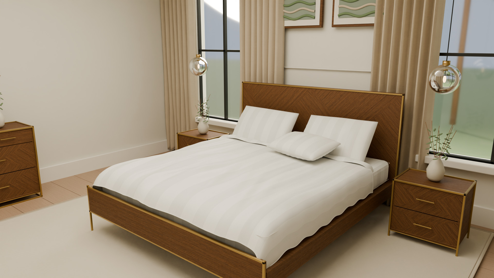
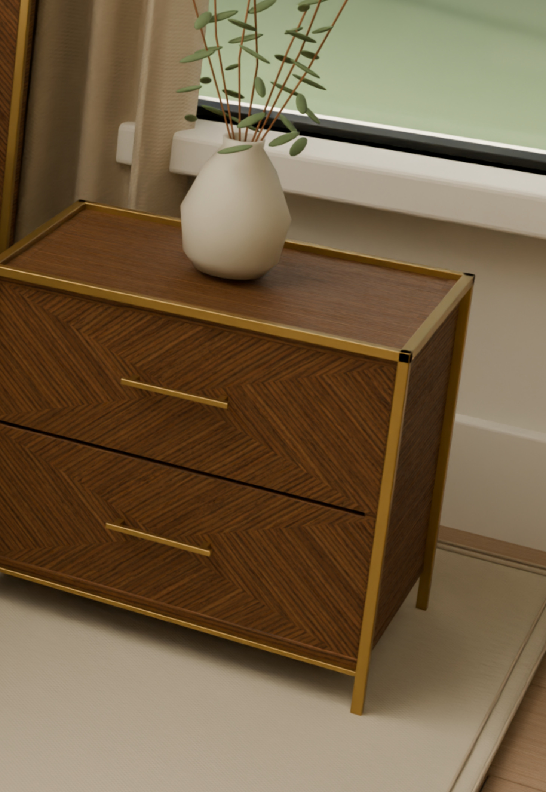

SIENNA / A CONNECTED HOME
A home,
considered.
Serat kayu yang bercerita. Detail yang terasa.
Satu koleksi, di dalam rumah yang utuh.
THE ART OF LIVING TOGETHER
Berbeda ruang.
Satu bahasa desain.
Warm Brown ash, pola veneer chevron, dan garis kuningan yang ringan. Koleksi SIENNA hadir dalam rumah virtual yang menghubungkan ruang istirahat, berkumpul, dan berbagi.
Rekonstruksi 3D berdasarkan katalog SIENNA 2026. Arsitektur dan elemen pelengkap merupakan interpretasi desain.
EXPLORE AT YOUR OWN PACE
Step inside.
Berjalan antar-ruang. Dekati produknya.
Buka laci, lihat apa yang ada di dalam.
Make yourself
at home.
Model rumah ±8 MB · dimuat saat dibuka
Geser tampilan untuk menoleh. Gunakan W A S D / panah atau tombol gerak untuk berjalan. Scroll untuk zoom.
Klik furnitur untuk detail, lalu pilih Inspeksi untuk orbit produk. Tombol Buka menggerakkan laci atau pintunya.
Mode Orbit rumah memperlihatkan seluruh denah tanpa atap. Tekan Esc untuk kembali.
Browser memakai model yang dioptimalkan dan pencahayaan real-time. Untuk hasil ray-traced, lihat render Cycles 4K di bawah.
FOURTEEN PIECES. ONE COLLECTION.
The Sienna edit.
Ukuran asli katalog.
Setiap produk, dalam tiga dimensi.
Gambar produk di bawah adalah referensi katalog asli. Pilih produk untuk membuka model 3D hasil rekonstruksi.
Tidak ada produk yang cocok. Coba nama atau SKU lainnya.
LIGHT, SPACE & TEXTURE
A different point of view.
Empat render asli Blender Cycles.
UHD 4K · 3840 × 2160.

THE SIGNATURE / CHEVRON VENEERMATERIAL MATTERS
Warm by nature.
Precise by design.
Bukan sekadar warna cokelat. Arah serat bertemu dalam pola chevron, dibingkai garis metal yang halus. Tekstur ash hasil fotografi dipadukan dengan bevel, roughness, dan normal map untuk menangkap perubahan cahaya.
- 01 / TIMBER
- Veneer / Vic Ash Timber
Interpretasi finish LCV09 Warm Brown - 02 / METAL
- Rangka ramping, detail sikat halus
Warna kuningan sesuai referensi - 03 / TEXTILE
- Bedding putih bergaris
Lipatan geometri, serat tenun, jahitan tepi
FROM VIEWING TO MAKING
Yours to explore.
Let's talk.
Ingin file Blender, model 3D, atau render 4K? Hubungi Muhammad Rizky melalui WhatsApp. Pilih file di samping, atau minta seluruh data proyek dalam satu percakapan.
Semua permintaan file diarahkan ke WhatsApp. Galeri dan room tour tetap bisa dijelajahi tanpa menghubungi kreator.